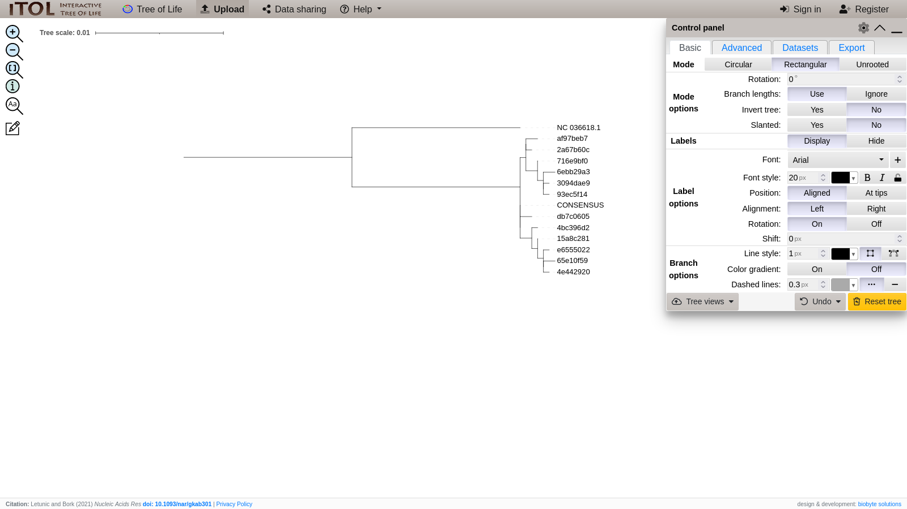

Playing well with others: Combining HapLink with external tools
HapLink is not a one-man show: it knows how to cooperate with other tools! In this tutorial, we'll let HapLink do the haplotype calling, but use other tools to go from reads to variant calls, and from haplotypes to phylogenies.
Install the other tools
Before we get too far, let's make sure that we actually have all of the tools that we need. Let's create a brand new conda environment.
conda create \
-n haplink-tutorial-3 \
-c bioconda \
-c conda-forge \
wget=1.20 \
sra-tools=3.0 \
entrez-direct=16.2 \
samtools=1.17 \
minimap2=2.26 \
lofreq=2.1 \
haplink \
mafft=7.520 \
raxml-ng=1.2 \
-y
conda activate haplink-tutorial-3- None
Get sample data
We'll pull some of the validation data data from NCBI. First, the reference genome from GenBank.
esearch \
-db nucleotide \
-query "NC_036618.1" \
| efetch \
-format fasta \
> idv4.fastaNext, we'll download one of the pools from the validation set from SRA.
fasterq-dump --concatenate-reads -X "SRR24796010" | gzip > "IDV-Aug2022-P2.fastq.gz"- idv4.fasta
- IDV-Aug2022-P2.fastq.gz
Align sequences
We have a set of Nanopore reads and a reference genome to go with them. We'll use minimap2 to align the reads to reference. minimap2 requires the -a flag to output in SAM format, and uses the -x flag to tweak the settings for optimal Nanopore alignment. We then run those reads through samtools sort and samtools index to reduce the computational load needed to find reads by our downstream tools, and samtools view -b to convert the SAM file into a compressed BAM file.
minimap2 \
-t $(($(nproc)/2)) \
-ax map-pb \
idv4.fasta \
IDV-Aug2022-P2.fastq.gz \
| samtools sort \
| samtools view \
-@ $(($(nproc)/2)) \
-b \
-h \
> IDV-Aug2022-P2.bam
samtools index IDV-Aug2022-P2.bam- IDV-Aug2022-P2.bam
- IDV-Aug2022-P2.bam.bai
Call variants
People are picky about their variant callers. Even viralrecon can't decide which caller to use. If you don't like HapLink's built-in variant caller, that's fine! Here, we'll use LoFreq (another fine variant caller) to decide for us whether nucleotide variations are variants, or just randomness. The only requirement is that the output must be in VCF format (looking at you, iVar) for HapLink to read it.
lofreq faidx idv4.fasta
lofreq call-parallel \
--pp-threads $(($(nproc)/2)) \
--call-indels \
--ref idv4.fasta \
IDV-Aug2022-P2.bam \
--out IDV-Aug2022-P2.vcf- IDV-Aug2022-P2.vcf
Call haplotypes
And we're back... We now have each piece (reference, alignment, variant calls) needed for HapLink to find haplotypes.
export JULIA_NUM_THREADS=$(($(nproc)/2))
haplink haplotypes \
idv4.fasta \
IDV-Aug2022-P2.vcf \
IDV-Aug2022-P2.bam \
> IDV-Aug2022-P2.yml
haplink sequences \
idv4.fasta \
IDV-Aug2022-P2.yml \
> IDV-Aug2022-P2.fasta- IDV-Aug2022-P2.yml
- IDV-Aug2022-P2.fasta
Alignment (again, but on a bigger scale)
Now that we have the sequences of every haplotype that HapLink found, we can go farther and see how they compare altogether. We'll use MAFFT to generate a multiple sequence alignment of every haplotype. By comparing everything to everything, we can start to see patterns that may have been masked by comparing to the reference genome.
cat idv4.fasta IDV-Aug2022-P2.fasta > sequences.fasta
mafft \
--thread $(($(nproc)/2)) \
--auto \
sequences.fasta \
> haplotypes.fas- sequences.fasta
- haplotypes.fas
Phylogeny
Although the human brain is reasonably good at picking up pattern differences, we can mathematically determine the similarities between sequences using a phylogeny. We'll use RAxML-NG to solve the phylogeny for us. Note that RAxML-NG produces a lot of output.
raxml-ng --all \
--threads auto{MAX} \
--msa haplotypes.fas \
--model GTR+G- haplotypes.fas
- haplotypes.fas.raxml.bestModel
- haplotypes.fas.raxml.bestTree
- haplotypes.fas.raxml.bestTreeCollapsed
- haplotypes.fas.raxml.bootstraps
- haplotypes.fas.raxml.log
- haplotypes.fas.raxml.mlTrees
- haplotypes.fas.raxml.rba
- haplotypes.fas.raxml.startTree
- haplotypes.fas.raxml.support
You can now import the haplotypes.fas.raxml.bestTree file into a phylogeny viewer to view the tree. A personal favorite around our lab is iTOL, but many others will work.

Now you can do some heavy lifting with HapLink and its friends! You can leave the tutorials and check out the CLI reference, for an in-depth examination of everything you just learned, or dive into the next tutorial to learn how to call haplotypes without leaving the Julia REPL.